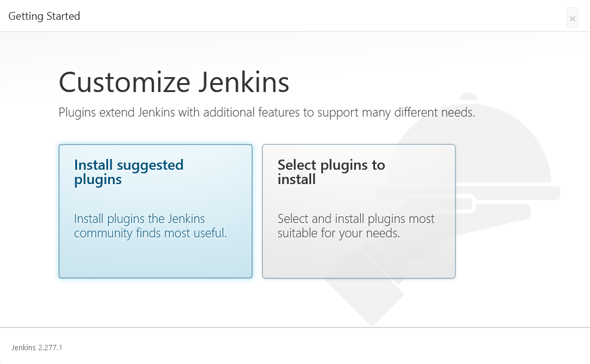
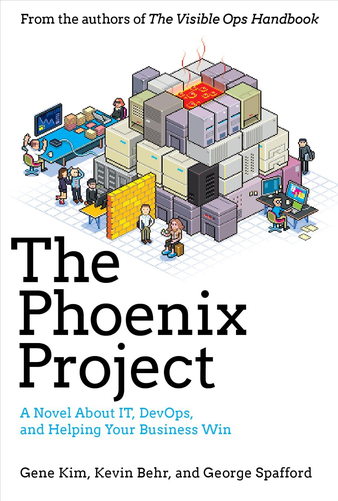
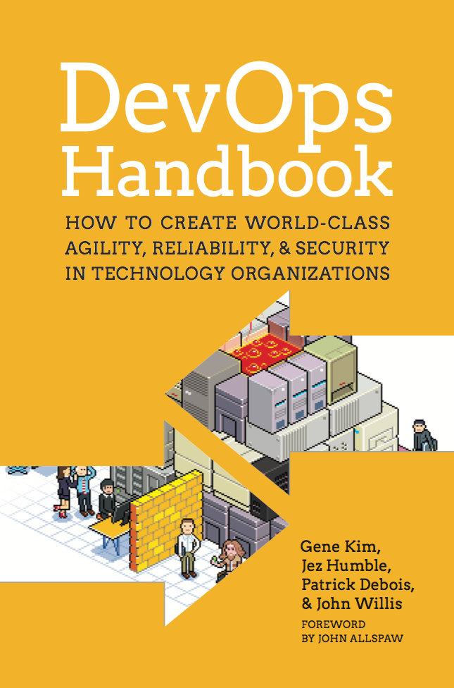
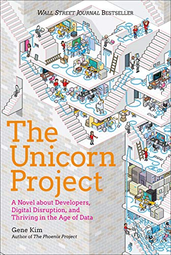
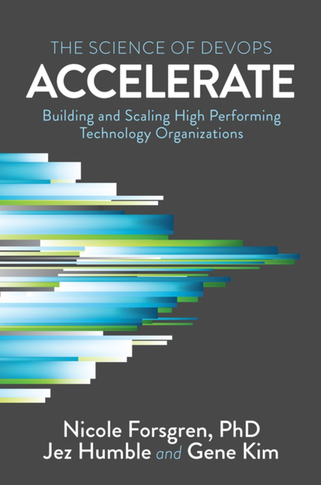
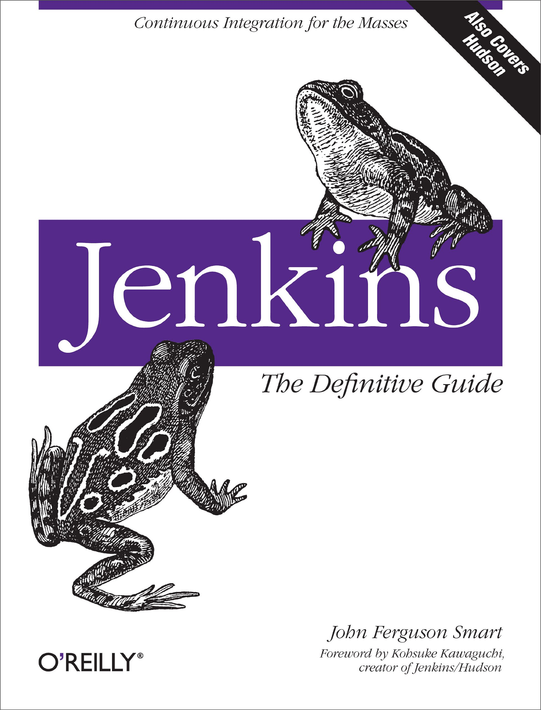
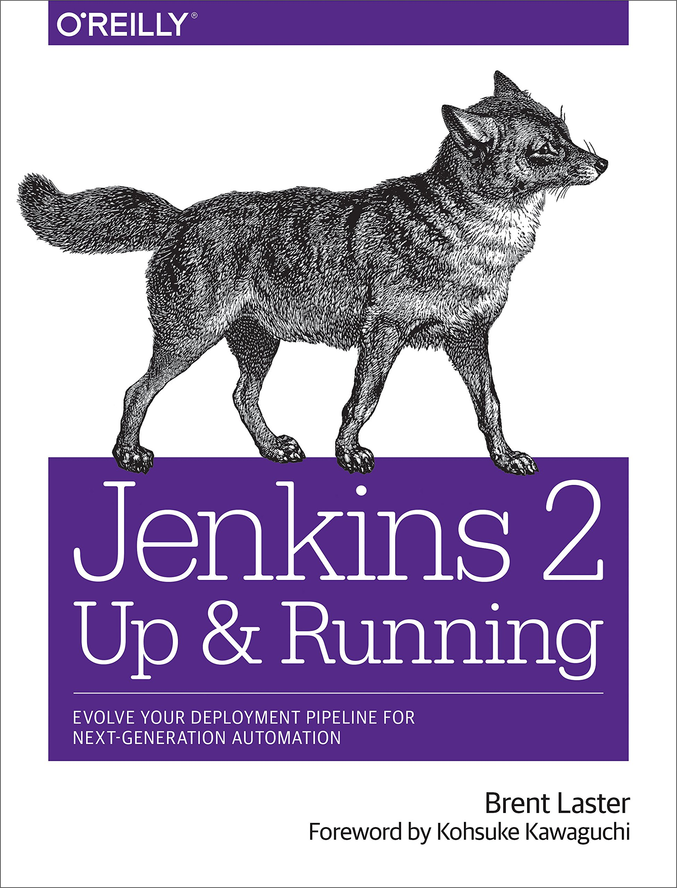
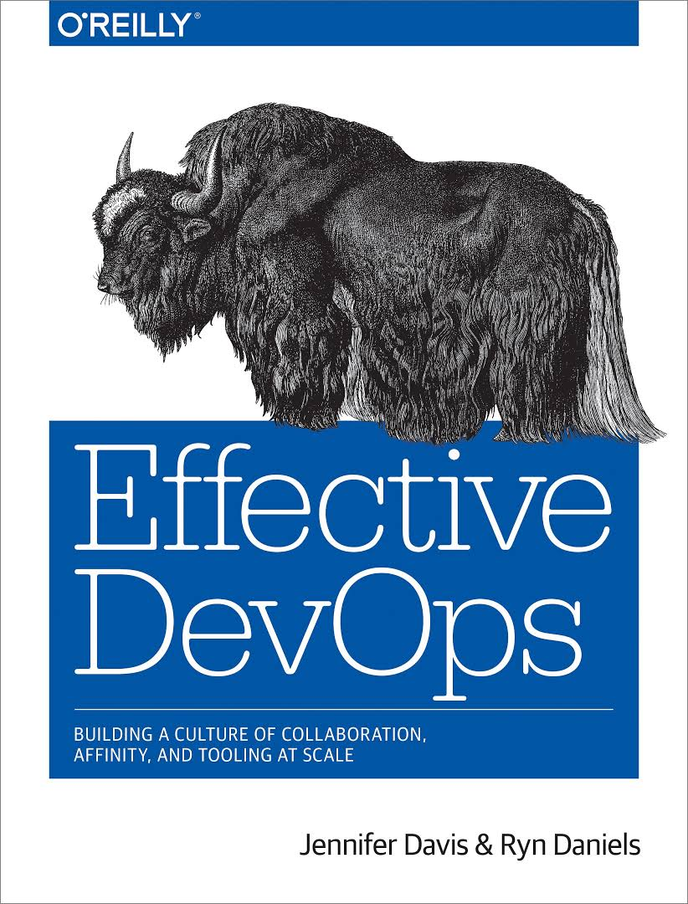
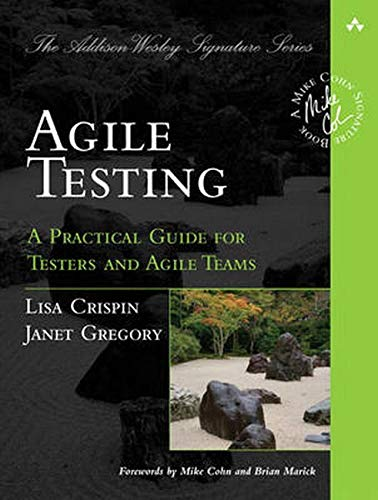

Previous slide Next slide Toggle fullscreen Open presenter view
What is Jenkins?
Self-contained, open source, Java-based automation server
History of Jenkins development in one line: Hudson --> Jenkins 1.x --> Jenkins 2.x
Automates all sorts of tasks related to building , testing , and delivering or deploying software.
Fun Fact: In 2019, the EU edition of DevOps World | Jenkins World was hosted in Lisbon
Automation 101 What is automation?
The use of software to create repeatable instructions and processes to replace or reduce human interaction with IT systems
Use-Cases:
TL;DR We can think of automation as both meta-software (software to act on software) and force multiplier (a helpful tool for understaffed and/or overworked teams)
Automation 101 Why automate?
Eliminate toil i.e. work w/o productivity, and make life easier
automatic / automated gap
Automation and DevOps
Automate everything is a fundamental principle of DevOps and automation is the driving force behind the 3 Ways (flow, feedback, continuous learning and experimentation)
"Although automation may be seen as too expensive to implement (we often hear, I don’t have time or budget to automate—it’s not a feature!
Source: 2019 Accelerate State of DevOps Report
Homework: read The Evolution of Automation at Google
Why Jenkins? Features
Runs out-of-the-box, with packages for Windows, Mac OS X and other Unix-like operating systems
Integrates with (practically) every tool in the DevOps toolchain
It can be extended via its plugin architecture, providing nearly infinite possibilities
Why Jenkins? Alternatives
Jenkins Architecture
Master
Slave (1.x) / Agent (2.x)
Job (1.x) / Project (2.x)
Build
CloudBees Jenkins Platform Architecture
Jenkins Installation Prerequisites
Minimum HW requirements:
RAM: 256MB
Drive Space: 1GB
Recommended HW configuration (small team):
RAM: 4GB+
Drive Space: 50GB+
SW requirements:
Jenkins Installation Windows Run the installer and follow the instructions
MacOS Homebrew package manager
Latest release: brew install jenkins
LTS version: brew install jenkins-lts
Docker Docker section of the User Handbook > Installing Jenkins documentation.
docker run --rm -p 8080:8080 jenkins/jenkins:lts
Tip: When in doubt, install the Long-Term Support (LTS)
Tip: By default, Jenkins uses port 8080 - this can be changed later by editing the config.xml file in the JENKINS_HOME directory.

Tip: In most cases, the Install suggested plugins option is the right choice
Jenkins UI Job Configuration View
This is the Configure view for a simple Freestyle job. Other types of jobs e.g. Pipeline have a slightly different layout.
This is where you specify what the job will actually do and where you’ll probably spend most of your time.
Managing Jenkins Global Tool Configuration
Managing Jenkins System Log
Project Types
For its simplicity, the Freestyle project is usually the best option.
Most project types in the Jenkins ecosystem are actually just extensions of the Freestyle project. If you don’t know what to create and/or want to keep your options open, use a Freestyle job.
If you already have some experience with Jenkins and/or developing software, consider using a Pipeline .
Use the Copy from option at the bottom of the page if you know of a project with a similar configuration. This will save you a lot of trouble and a lot of time.
This menu will vary depending on the plugins you have installed
Plugins Introduction
Plugins are the primary means of enhancing a Jenkins master to suit organization- or user-specific needs.
Packaged as self-contained .hpi or .jpi files - which contain all the necessary code, images, and other resources that the plugin needs to operate successfully.
Plugins can be automatically downloaded (incl. their dependencies) from the Update Center .
Plugin Manager HTTP Proxy Configuration
Go to Manage Jenkins > Plugin Manager and open the Advanced tab.
Plugin Manager Install Plugins (Automatic)
Go to Manage Jenkins > Plugin Manager and open the Available tab.
Select the plugins you want to install and click Install without restart or Download now and install after restart.
Plugin Manager Install Plugins (Manual)
Download the HPI/JPI file, go to Manage Jenkins > Plugin Manager and open the Advanced tab.
In the Upload Plugin section, choose the HPI/JPI file and click Upload.
Plugin Manager Install Plugins
Most plugins will only be activated after a restart. The easiest way to do this is to check the Restart Jenkins when installation is complete and no jobs are running option at the bottom of the page.
Plugin Manager Update Plugins
Go to Manage Jenkins > Plugin Manager and open the Updates tab.
Select the plugins you want to update and click Download now and install after restart.
Tip: There is no difference between installing a plugin and updating one. In both cases, Jenkins is essentially placing the newest version of an HPI/JPI file inside the plugins directory.
Plugin Manager Remove Plugins
Go to Manage Jenkins > Plugin Manager and open the Installed tab.
Click the uninstall button for the plugins you want to remove.
Pipelines Why Pipelines?
Properties
Code: implemented in code and typically checked into source control
Durable: survive both planned and unplanned restarts of the Jenkins master
Pausable: can be stopped and wait for human input or approval before continuing
Versatile: support complex real-world CD requirements
Extensible: supports custom extensions to its DSL and multiple options for integration with other plugins
Pipelines Overview
Pipelines Terminology
Pipeline
Node
StageConceptually distinct subset of tasks performed through the entire Pipeline e.g. Build , Test and Deploy stages), which is used by many plugins to visualize or present Jenkins Pipeline status/progress
Stepwhat to do at a particular point in time.
Tip: For more definitions, head over to the Jenkins Glossary
Declarative Pipeline
pipeline - contains the entire Jenkins Pipeline definitionagent - defines the agent used for the entire Pipeline or a stage
label - existing Jenkins node labeldocker - requires Docker-enabled node
image - run inside specified Docker imagelabel - existing Jenkins node labelargs - arguments for Docker container
dockerfile - use a local Dockerfile
filename - name of local Dockerfilelabel - existing Jenkins node labelargs - arguments for Docker container
stages - contains Pipeline stages and steps
stage - a specific named "stage" of the Pipeline
steps - one or more build steps that define the actions in the stage.
any build step or build wrapper defined in Pipelinesh, bat, timeout, echo, archive, junit, etc.
parallel (optional) - execute steps in parallel - may not be used with other stepsscript (optional) - execute Scripted Pipeline block
when (optional) - Runs stage conditionally
branch - stage runs when branch name matchesexpression - boolean expression
agent, environment, tools and post may also optionally be defined in stage
Meet the Future Jenkins X
CI/CD solution for modern cloud applications on Kubernetes
For more information, please visit Jenkins X
Jenkins is in berserk mode!
What should I do?
Common Problems Creating backups
Install the ThinBackup plugin and go to Manage Jenkins > ThinBackup .
In the Settings page, set the backup directory and select the files you wish to keep.
Click the Backup Now button.
Tip: Manual Jenkins updates can be performed by copying the contents of the backup folder to a clean Jenkins installation.
Common Problems How do I start/stop/restart Jenkins manually?
To restart Jenkins manually , use one of the following commands:
JENKINS_URL/safeRestart
Allows all running jobs to complete. New jobs will remain in the queue to run after the restart is complete.
JENKINS_URL/restart
Forces a restart w/o waiting for builds to complete.
Whenever possible, use the Manage Jenkins > Prepare for Shutdown option:
Common Problems How do I start/stop/restart Jenkins manually?
Windows JENKINS_HOME and run jenkins.exe start/stop/restart.
MacOS
Stop Jenkins: sudo launchctl unload /Library/LaunchDaemons/org.jenkins-ci.plist
Start Jenkins: sudo launchctl load /Library/LaunchDaemons/org.jenkins-ci.plist
Linux
Open a new terminal window and runsudo service jenkins start/stop/restart
Common Problems What should I do when I find a problem with Jenkins?
Make sure it’s actually a problem
Collect Evidence System Logs
Report the Issue issues.jenkins.io and open a ticket
Take-Home Messages
Work with Jenkins, not for Jenkins - if you're spending most of your time tweaking Jenkins settings and debugging problems, then you're doing it wrong
Automate Jenkins management - use the remote access API , script console , JCasC and other features and plugins, to perform basic Jenkins operations
Love thy Pipelines - Freestyle jobs are a thing of the past, use Pipelines whenever possible and take good care of them - writing pipelines is more art, than science
Cattle vs Pets - leverage the power of Docker and use ephemeral agents cf. Using Docker with Pipeline for more information
Don't go blaming Jenkins if you write "bad" tests - it's not Jenkins' fault if you write brittle and/or flaky tests cf. all your tests are terrible
Learn effective troubleshooting and RTFM - investigate why a system doesn't work and dig deep into Jenkins documentation and StackOverflow to find a solution
References Books








DORA State of DevOps 2019 - p. 60
For more information, visit [User Handbook > Installing Jenkins](https://jenkins.io/doc/book/installing/)
At this stage, if you skip the plugin installations, you’ll have to configure the HTTP proxy via the Plugin Manager.
Only then will you be able to install the suggested plugins.
Later in this course, we will show you how to do this.
Mandatory:
+ Server
Optional:
+ Port
+ Username
+ Password
+ No Proxy Host
For most situations, the Install suggested plugins button is the best option.
However, there are at least two scenarios where the Select plugins to install option should be considered:
* You don’t want to install all the plugins in the suggested plugins list to keep things simple
* You want to install a different set of plugins that the ones listed in the suggested plugins
💡 **Tip:** Eventually, you’ll start using the links directly instead of navigating to this menu e.g. navigating to `JENKINS_URL/configure` to open the **Configure System** page.
🎗️ Remember: The *Update Center* is a service operated by the Jenkins project which provides an inventory of open source plugins which have been developed and maintained by various members of the Jenkins community.
- [AnsiColor](https://plugins.jenkins.io/ansicolor/) - adds support for standard ANSI escape sequences, including color, to Console Output
- [Green Balls](https://plugins.jenkins.io/greenballs/) - changes Jenkins to use green balls instead of blue for successful builds
div style="text-align:center">

</div
🎗️ CD Pipeline:** automated expression of your process for getting software from version control right through to your users and customers
The Declarative Pipeline syntax is usually the best choice since it a) provides richer syntactical features, and b) is designed to make writing and reading Pipeline code easier.
For more information about Pipelines, please visit [User Handbook > Pipeline](https://www.jenkins.io/doc/book/pipeline/)
This gives teams the ability to edit, review, and iterate upon their delivery pipeline.
including but not limited to the ability to fork/join, loop, and perform work in parallel.
Adapted from https://www.slideshare.net/dcjuengst/cloudbeesjenkinsplatform2016